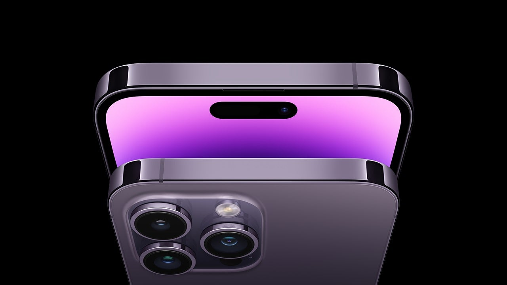

Static Card Designs



Daisy
The daisy is a beautiful and delicate flower that symbolizes purity, innocence, and new beginnings. With its vibrant colors and simple elegance, the daisy is a popular choice for bouquets, gardens, and floral arrangements. Whether used as a decorative element or given as a gift, the daisy brings a touch of freshness and joy to any setting.